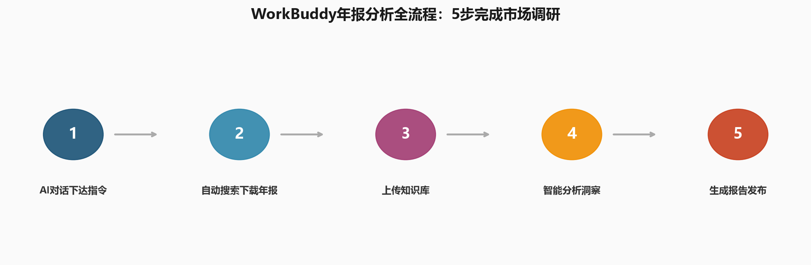
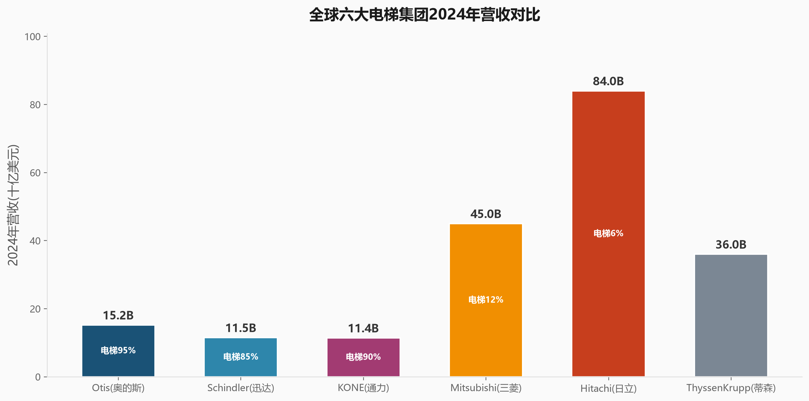
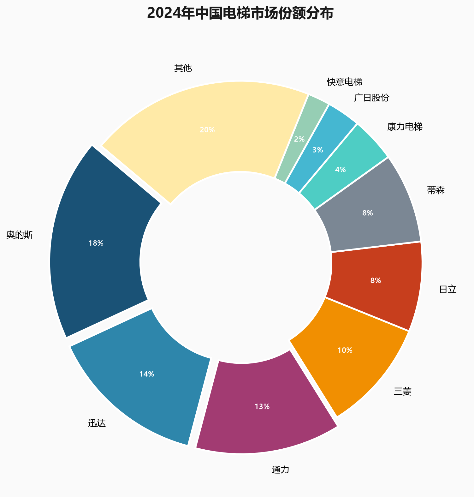
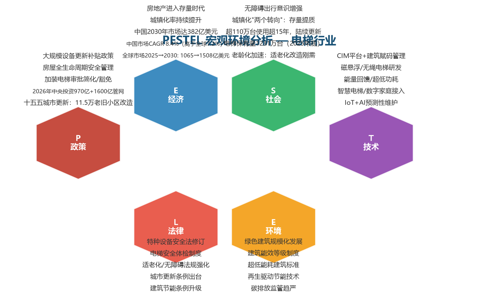
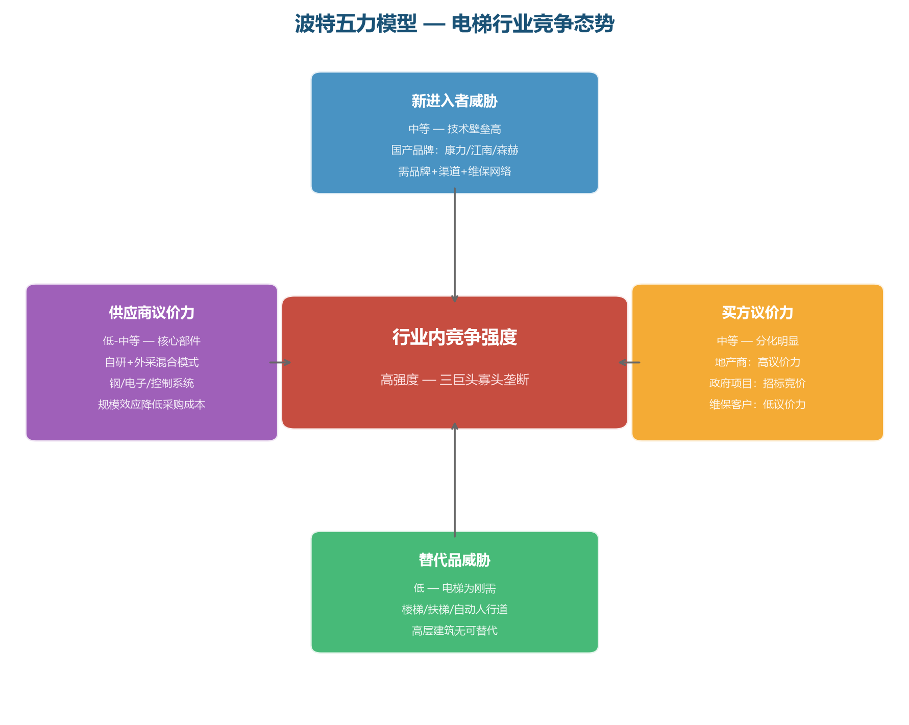
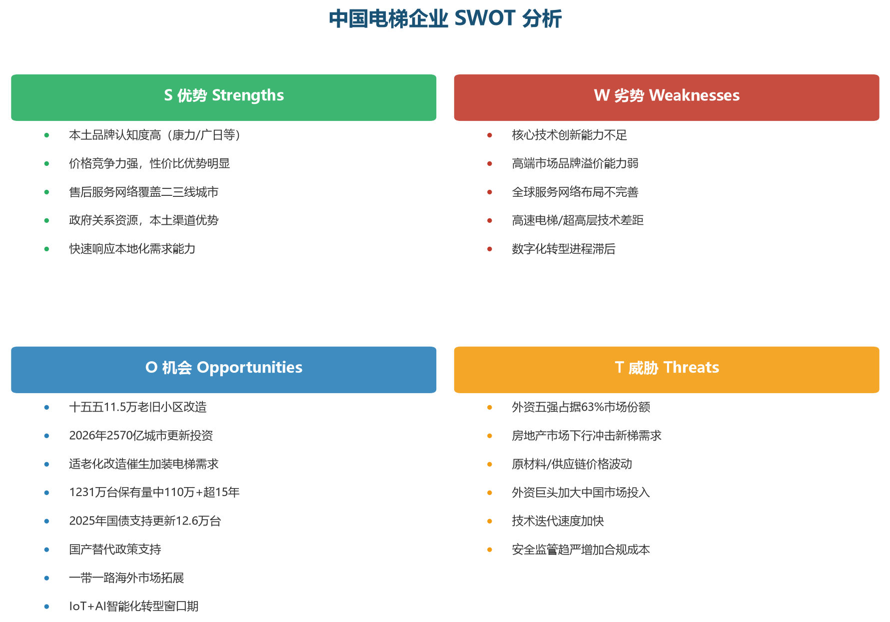
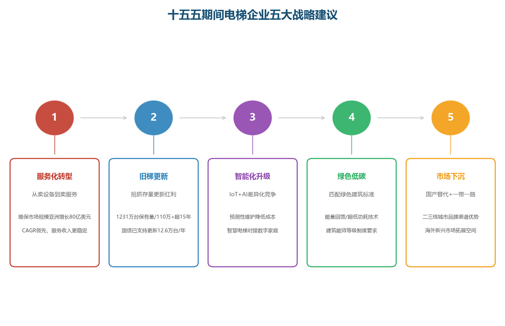

昨天我做了一件让我自己都震惊的事情。
作为一个不会写代码的财务人，我只用了一句话，就让AI帮我下载了40份上市公司年报PDF，然后自动上传到我的知识库，最后生成了一份专业的行业分析报告。
从开始到结束，全程不超过5分钟。
如果你也在做行业研究、竞争分析或者投资调研，这篇文章可能会帮你省下几天的重复劳动。
📌 第一步：一句话下载年报
我要分析的是电梯行业。
在传统的做法里，做行业分析第一步是找数据。你需要：
- 打开巨潮资讯网，一家一家搜索公司
- 找到年度报告，点击下载
- 再打开 annualreports.com，搜索海外公司
- 反复切换网站，重复下载
8家A股公司 + 6家全球巨头，14家公司 × 6年 = 可能要下载84份PDF。
手动操作的话，至少需要半天时间。
但我只对AI助手说了一句话：
"帮我下载上市电梯公司年报的pdf"
就这么简单。没有代码，没有技术门槛。
AI自动完成了：
- 识别行业关键词 → 搜索到8家A股上市电梯公司
- 调用金融数据库 → 从巨潮资讯网批量获取公告列表
- 构造下载链接 → 自动拼接PDF直链地址
- 批量下载 → 8份年报，共24.1MB，全部自动完成

▲ AI自动完成的下载流程
📌 第二步：一句话扩展到全球
A股搞定了。但电梯行业是全球化竞争，必须看国际巨头。
我又说了一句话：
"查找奥的斯，迅达，三菱，日立，通力，蒂森，2020-2025年年报的pdf，并上传到ima"
AI立刻理解了我的意图：
- 识别出6家全球电梯巨头：Otis、Schindler、KONE、Mitsubishi、Hitachi、ThyssenKrupp
- 从 annualreports.com 和各公司官网搜索年报链接
- 批量下载 32份年报PDF（共298MB）
- 自动上传到我的IMA知识库
💡 小发现：ThyssenKrupp（蒂森克虏伯）2020年已经把电梯业务卖掉了，年报里不再有电梯数据。这个信息也是AI在处理时自动发现的，帮我省了一个可能的数据陷阱。
📌 第三步：40份年报变成可搜索的知识库
下载完毕后，AI自动把40份年报PDF（A股8家 + 全球6家）全部上传到了我的IMA知识库。
这意味着什么？
意味着以后我可以直接用自然语言搜索这些年报内容，比如：
- "康力电梯2024年的营业收入是多少？"
- "对比Otis和KONE近3年的毛利率变化"
- "通力电梯在中国市场的新梯订单量是多少？"
- "奥的斯2024年的研发费用占比是多少？"
不用翻PDF，不用Ctrl+F，直接问，直接答。
这就是AI时代的"数据整理"——不是整理文件，而是让数据变得可对话。
📌 用数据说话：全球电梯行业格局
40份年报上传完毕后，我让AI帮我生成了一些关键图表和分析。
先看全球六大集团的营收体量：

▲ 全球六大电梯集团2024年营收对比（数据来源：各公司年报）
💡 关键洞察：
- 纯电梯公司中，Otis以152亿美元营收遥遥领先，Schindler和KONE旗鼓相当
- 综合集团（三菱、日立、蒂森）营收巨大，但电梯业务占比很低
- 电梯行业真正的"三巨头"是：Otis、Schindler、KONE，三家合计占据全球约45%市场份额
再看中国市场格局：

▲ 2024年中国电梯市场份额分布
💡 中国市场发现：
- 外资五大品牌（奥的斯、迅达、通力、三菱、日立）合计占据63%的市场份额
- 国产品牌中，康力电梯以4%的市场份额位列国产第一
- 但国产品牌整体份额仍然偏小，技术差距和品牌溢价是主要瓶颈
📌 十五五规划下：电梯行业的战略分析
数据和年报只是起点。真正有价值的是：从这些数据中提炼出战略洞察。
2026年5月，国务院正式印发《城市更新"十五五"规划》，明确到2030年新开工改造11.5万个城镇老旧小区，2026年中央预算内投资970亿元城市更新专项，另有1600亿元用于地下管网建设改造。
这对电梯行业意味着什么？我用三个经典战略框架帮你拆解。
一、PESTEL宏观环境分析
PESTEL是战略分析的"第一张地图"——帮你扫描外部环境的六大驱动力：

▲ 电梯行业PESTEL宏观环境六维分析
关键发现：
- 政策（P）是当前最大的驱动力——十一五规划直接释放万亿级城市更新红利
- 社会（S）层面中国电梯保有量达1231.59万台（截至2025年底），其中使用15年以上的老旧电梯已超过110万台，正陆续进入更新换代期，需求刚性且不可逆
- 技术（T）和环境（E）是中长期竞争的制高点——IoT预测性维护和绿色节能技术
- 中国市场CAGR 8.4%，高于全球平均7.2%，2030年市场规模将达382亿美元
二、波特五力模型：行业竞争态势
波特五力帮你判断一个行业到底"好不好赚钱"。电梯行业的答案是：短期承压，长期结构性机会明确。

▲ 电梯行业波特五力竞争态势分析
竞争格局解读：
- 行业竞争强度高：Otis、Schindler、KONE三大巨头占据全球约45%份额，寡头格局稳固
- 新进入者威胁中等：技术+品牌+维保网络三重壁垒，国产品牌在性价比上突围但高端仍难突破
- 买方议价力分化：大型地产商议价强，但政府项目和维保客户议价力较弱
- 供应商议价力较低：头部企业核心部件自研，规模效应降低采购成本
- 罗兰贝格报告指出：亚洲现代化改造市场CAGR高达11%，是竞争最激烈的增量战场
三、中国电梯企业SWOT分析
把宏观环境和竞争格局叠加到中国本土企业身上，我用SWOT框架做了一次系统梳理：

▲ 中国电梯企业SWOT战略矩阵
SWOT核心结论：
- 最大机会（O）：十五五规划的11.5万老旧小区改造 + 1231万台电梯保有量中110万台已超15年服役期（2025年仅国债就支持更新12.6万台），这是一个万亿级的存量市场
- 最大劣势（W）：国产品牌高端技术差距仍然明显，超高速电梯和智能系统是短板
- 最大威胁（T）：外资五大品牌占据63%份额，且正加大对中国市场的投入
- 最优策略：利用本土渠道和成本优势（S），抓住城市更新和旧梯更新政策红利（O），在维保和旧改市场建立护城河
四、十五五期间五大战略建议
基于以上三个框架的分析，我为中国电梯企业提炼出五大战略方向：

▲ 十五五期间电梯企业五大战略方向
具体解读：
- 1. 服务化转型 — 新梯市场短期承压，但维保服务市场稳定增长。亚洲维保市场潜力达80亿美元。从"卖设备"转向"卖全生命周期服务"，收入更稳定、利润更厚。
- 2. 旧梯更新 — 截至2025年底，中国电梯保有量达1231.59万台，其中使用15年以上的老旧电梯超过110万台，使用20年以上的约30万台。2025年超长期特别国债已支持更新12.6万台住宅老旧电梯。十五五明确老旧小区加装电梯审批可简化/豁免，这是政策+需求双轮驱动的确定性机会。
- 3. 智能化升级 — IoT+AI预测性维护可将故障率降低30-40%，降低维保成本的同时提升客户粘性。智慧电梯对接CIM平台和数字家庭建设，是未来竞争的必备能力。
- 4. 绿色低碳 — 十五五要求绿色建筑规模化发展，建筑能效等级制度即将出台。能量回馈技术和超低功耗电梯将成为招投标的硬性门槛。
- 5. 市场下沉 — 国产品牌在二三线城市有渠道优势，结合国产替代政策和一带一路海外拓展，避开与外资巨头在一线城市高端市场的正面竞争。
📌 一个财务人的AI工作流
回顾整个过程，我发现AI工具帮我改变的不是"做什么"，而是"怎么做"。
过去做行业分析，我80%的时间花在找数据、下文件、整理文件夹上。真正分析数据的时间只占20%。
现在，这个比例完全反转了：
过去：找数据80% + 分析20%
↓
现在：找数据5% + 分析95%
AI不是替代我的分析能力，而是帮我消除低价值的重复劳动，让我能把精力集中在真正重要的事情上——洞察和决策。
💡 这篇文章想说的核心观点
1. 数据获取不应该成为瓶颈。AI可以帮你批量下载、整理、上传任何公开数据。
2. 知识管理应该自动化。把年报扔进知识库，然后像聊天一样搜索，比翻文件夹高效100倍。
3. 财务人最值钱的不是找数据的能力，而是从数据中发现洞察的能力。AI帮你省下来的时间，应该用来思考。
如果你也对AI工具感兴趣，或者想学习如何在日常工作中使用AI提升效率，欢迎在评论区聊聊。
下一篇我会分享：如何用AI从这些年报中自动提取财务数据，生成杜邦分析、趋势对比等专业图表。
📎 数据来源
1. A股上市公司年报：巨潮资讯网（cninfo.com.cn）2024年度报告
2. Otis年报：Otis Worldwide Corporation 2024 Annual Report（otis.com）
3. Schindler年报：Schindler Group 2024 Annual Report（schindler.com）
4. KONE年报：KONE Corporation 2024 Annual Report（kone.com）
5. Mitsubishi Electric年报：Mitsubishi Electric Corporation 2024 Annual Report（mitsubishielectric.com）
6. Hitachi年报：Hitachi, Ltd. 2024 Annual Report（hitachi.com）
7. ThyssenKrupp年报：ThyssenKrupp AG 2024 Annual Report（thyssenkrupp.com）
8. 全球电梯市场份额数据：Annualreports.com 及各公司年报披露
9. 全球电梯市场展望2030：罗兰贝格（Roland Berger）行业报告，2025年8月
10. 全球电梯和自动扶梯市场分析2025-2030：G20 Market Research，2026年4月
11. 《城市更新"十五五"规划》：国务院，2026年5月28日
12. 四部门详解城市更新十五五规划：中国政府网，2026年6月
13. 全国电梯保有量1231.59万台：市场监管总局《2025年全国特种设备安全状况通报》，2026年4月发布
14. 使用15年以上老旧电梯超110万台：国务院政策问答，2025年12月
15. 2025年超长期特别国债支持12.6万台老旧电梯更新：住建部数据，2026年2月
* 声明：本文数据来源于各上市公司公开披露的年度报告，仅供学习参考，不构成投资建议。